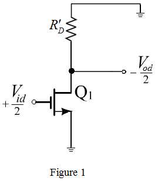
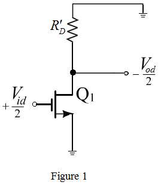
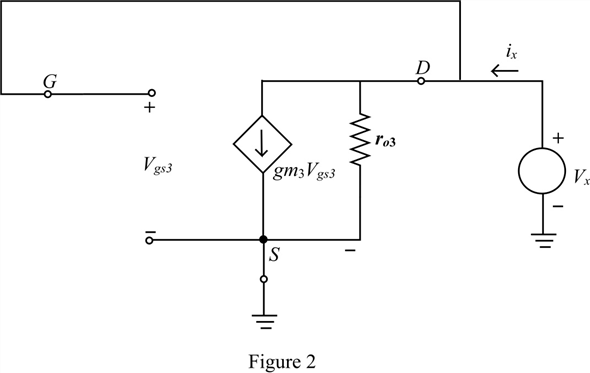

Refer to the circuit diagram of MOS differential amplifier in Figure P8.20 in the textbook.
Replace the PMOS transistors  and
and  with drain resistance
with drain resistance
Draw the differential half circuit of MOS differential amplifier.

Refer to the circuit diagram of MOS differential amplifier in Figure P8.20 in the textbook.
Replace the PMOS transistors and with drain resistance
Draw the differential half circuit of MOS differential amplifier.

(a)
Write the general expression for differential gain of a differential amplifier.

Find the output resistance  .
.
Apply test source to the half circuit to find the output resistance.
Draw the equivalent circuit for the half circuit of a MOS differential amplifier.

From Figure 2, it is clear that applied test source is equal to gate-to-source voltage of the transistor.
Define output resistance.
Apply Kirchhoff’s current law at node ‘D’.
Substitute  for
for  in the equation.
in the equation.
Substitute for  in the equation.
in the equation.
Substitute for  in the equation.
in the equation.
Thus, differential gain of the half circuit  is .
is .
Recall the output resistance expression.
Ignore term in the expression.
Differential gain becomes:
Term is very small.
Write the expression for  .
.
Write the expression for gain.
(c)
Recall the gain expression.
Substitute  for ,
for ,  for and
for and  for
for 
Solve for  .
.
Thus, channel width ratio of transistor to is .